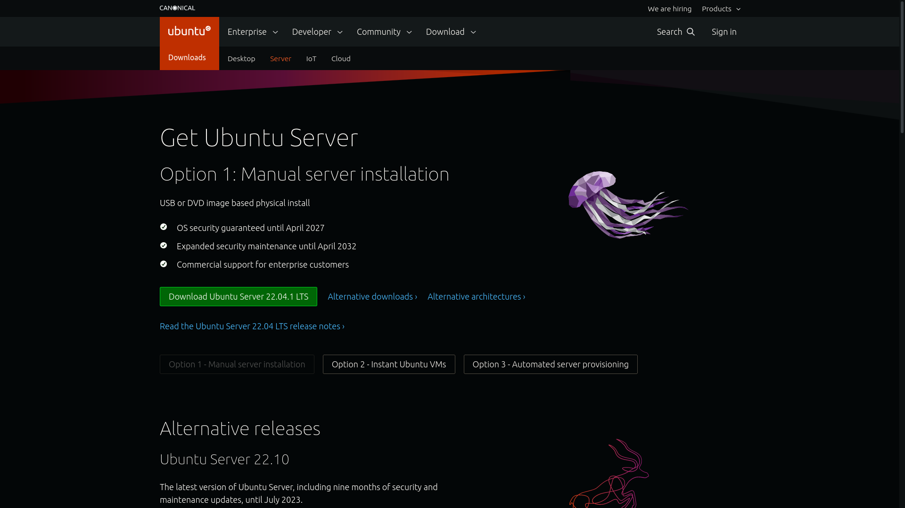
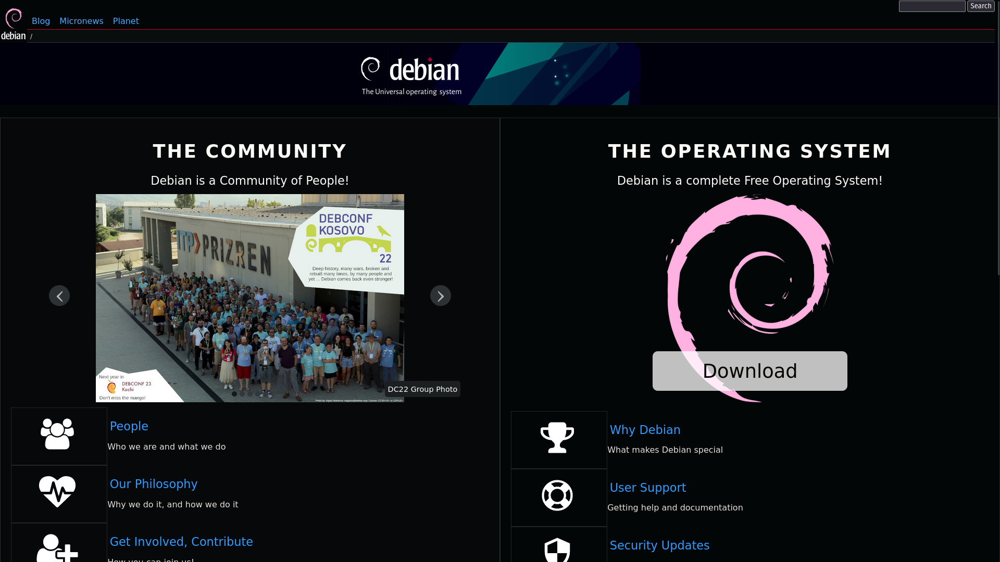
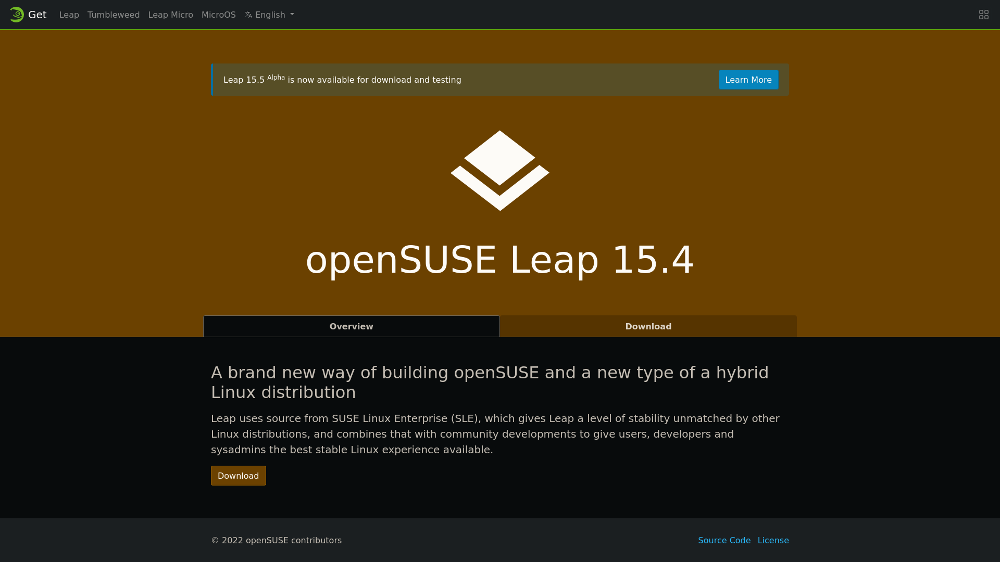
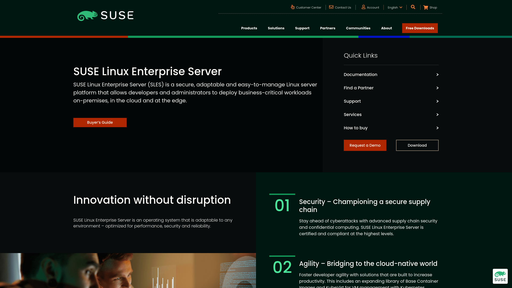
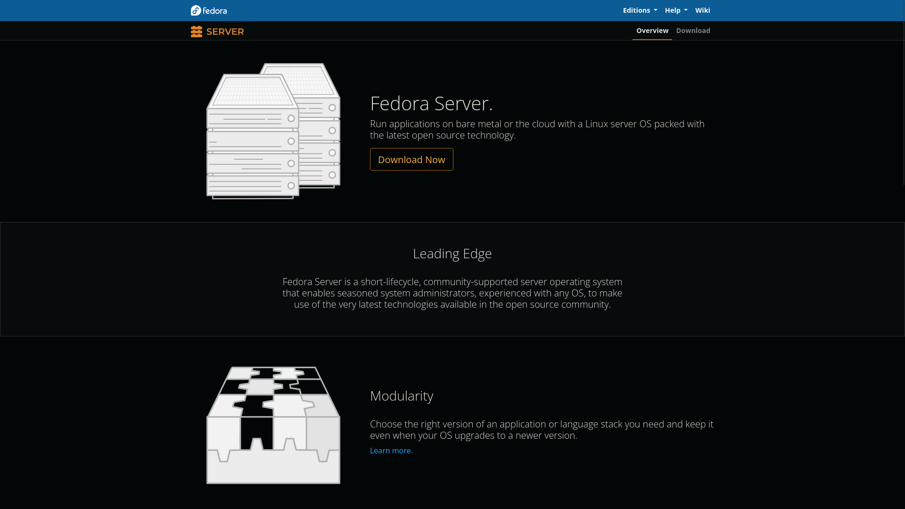
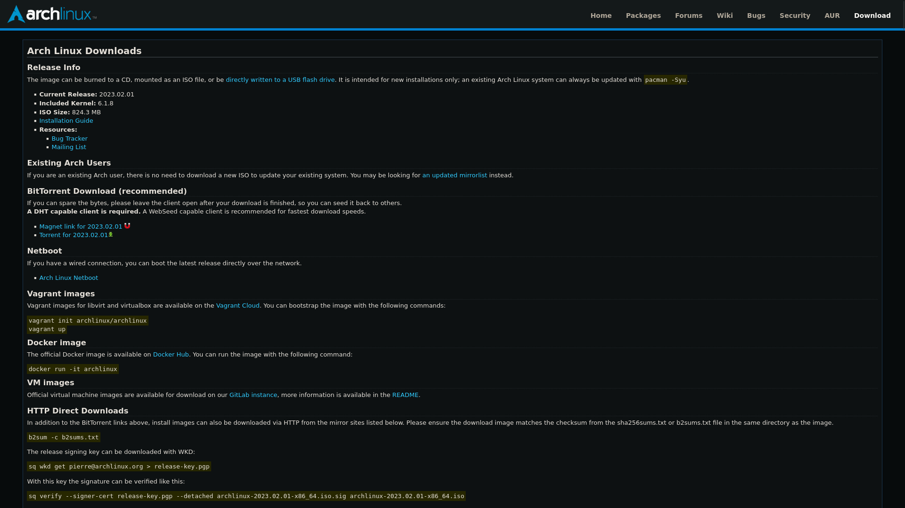
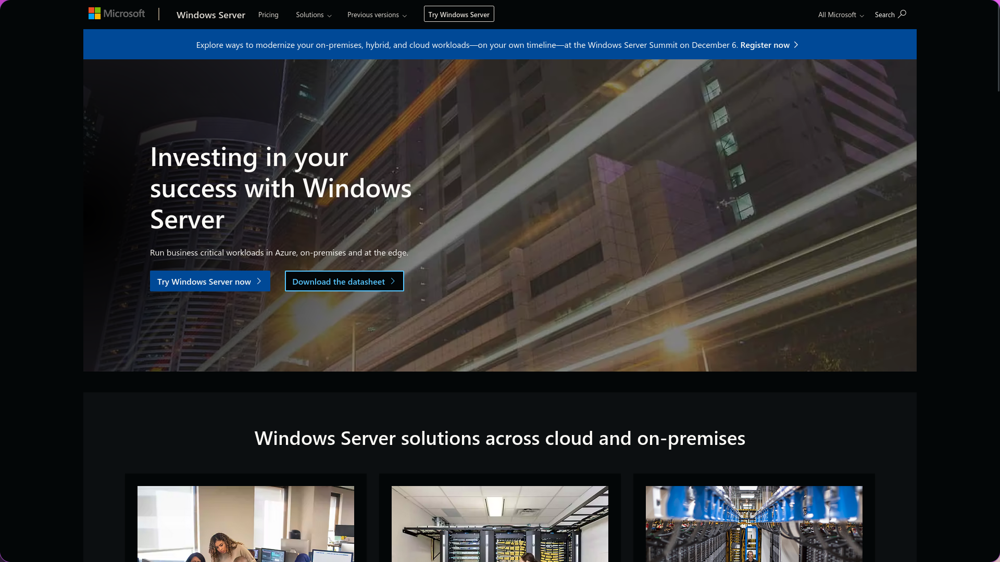

Servers
date:16/02/2023
Jump to content:
What is a server?
A server is a computer program, device, or a computer system that provides a service to other computers or devices connected to a network. A server can be hardware or software-based, and it can serve a variety of functions.
What we use them for:
In a computer network, servers are used to manage and share resources, such as files, applications, printers, databases, etc.
What kind of server are out there?
Servers can be categorized based on the type of services they provide, such as file servers, web servers, mail servers, application servers, database servers, and others. They can also be classified based on their physical location, such as cloud servers, on-premise servers, or dedicated servers.
Operating Systems for servers
A server typically runs a specialized operating system and software that allows it to perform its specific functions efficiently and securely.
*Press on the photo to get on their websites*
- Ubuntu Server 
- Debian 
- OpenSUSE Leap 
- SUSE Linux Enterprise Server 
- Fedora Server 
- Arch Linux 
*Press on the photo to get on their websites*
- Windows Server 
Conclusion
Overall, servers are an essential component of modern computer networks, and they play a critical role in providing the services and resources that users depend on.